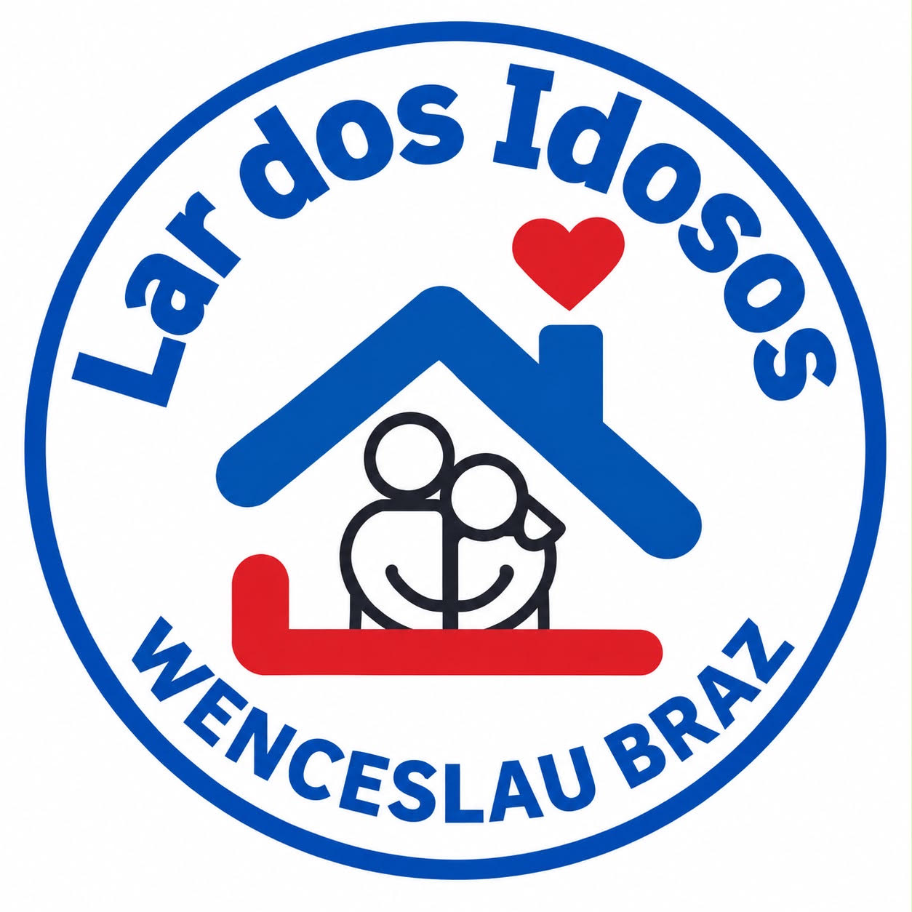

Wenceslau Braz - PR
Nosso lar acolhe e oferece assistência a idosos em Wenceslau Braz. Conheça nossa instituição e faça a diferença com sua doação.
Acolhimento, respeito e qualidade de vida para a melhor idade.
Oferecemos suporte diário, alimentação balanceada e atenção humanizada a todos os nossos acolhidos.
O Lar dos Idosos WB conta com a solidariedade e generosidade dos munícipes e parceiros de Wenceslau Braz.
Trabalhamos com dedicação diária para manter um ambiente acolhedor, limpo, seguro e cheio de amor.
Sua ajuda mantém o lar funcionando com higiene e dignidade.
No momento, nossa principal necessidade diária inclui:
Qualquer valor é revertido diretamente para a manutenção do bem-estar dos idosos.
Favorecido: Lar dos Idosos WB
Tipo de Chave: CNPJ (78.600.939/0001-84)
Venha nos visitar ou traga sua doação presencialmente.
Rua Vereador Alcides da Silva Reis, nº 500
Vila Santa Maria — Wenceslau Braz - PR
Segunda a Domingo até às 17h
(Preferencialmente no período da manhã)
(43) 99633-5348
Localizado em Wenceslau Braz - PR, no bairro Vila Santa Maria.
Abrir no Google Maps 🗺️Tire dúvidas sobre doações, agendamentos de entregas ou saiba mais sobre o nosso dia a dia.